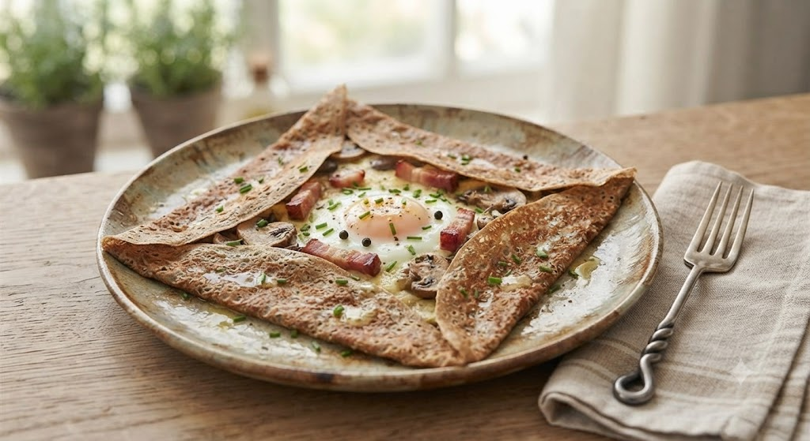
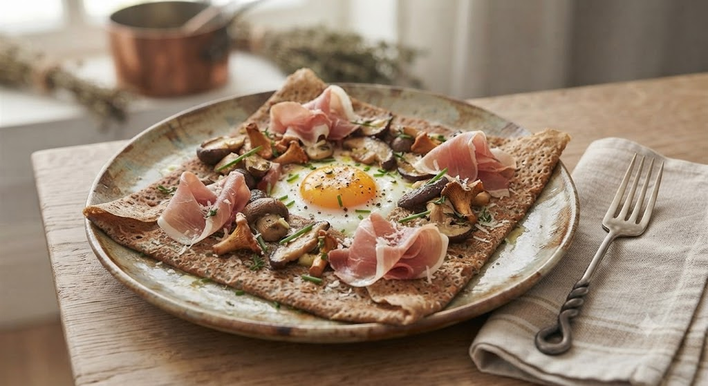
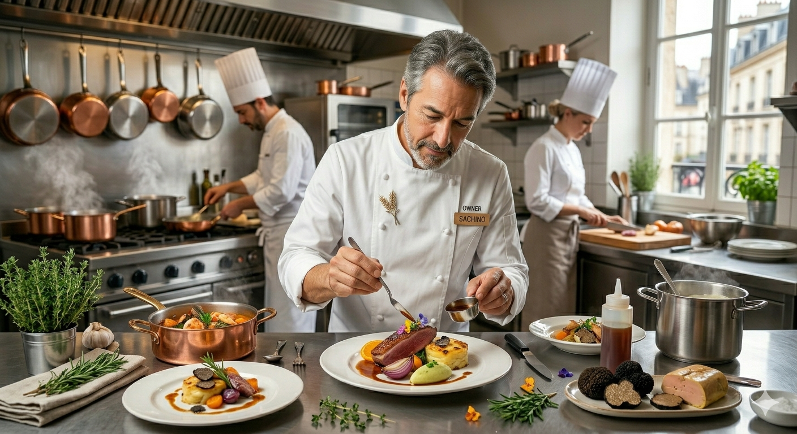

● 芳醇なきのこの香り
数種類のきのこを丁寧にソテーし、旨味を凝縮。
● 厳選プロシュート
しっとりとした塩気が蕎麦の香りを引き立てます。
● 魔法の食感
外はカリッ、中はモチッ。職人が一枚ずつ焼き上げます。
焼きたての香ばしい匂い、
目にも鮮やかな彩り豊かな野菜、
そして、大切な人と交わす会話。
トレトゥールメゾンアッシュは、単に食事を提供する場所ではなく、その「時間」そのものを豊かにするお手伝いをします。

店名の「メゾン（家）」には、どなたでも我が家のようにリラックスしてフレンチを楽しんでほしいという願いが込められています。
ランチからディナーまで、厳選したシャルキュトリーとワイン、そして彩り豊かなガレット。
あなたの日常に、ほんの少しの「魔法」を添えるレストランです。
「野菜が豊富でとてもヘルシー！見た目も綺麗で、女性同士のランチにぴったりでした。デザートのケーキも美味しかったです。」
「噂のトイレに驚きました（笑）。接客も手際よく、一人でもゆっくり過ごせました。ジャパンXのお肉料理も絶品です！」
選べる楽しさ、味わう幸せ
具材を自分好みに！
あなただけのガレット作り
ブランド豚「ジャパンX」や
自家製シャルキュトリー
料理を引き立てる
厳選された50種以上のワイン
お店の味をご自宅やギフトでもっと身近に楽しんでいただけるよう、新サービスを計画中です。
特選そば粉生地とお店自慢の具材（きのことソテー・厳選プロシュート等）をセットでお届け。フライパンひとつで、おうちで本格ガレットパーティーが楽しめます！
スマホで事前に注文・即決済。受け取り時間を指定できるので、仕事帰りやお出かけの際にも待ち時間ゼロで出来立てをお持ち帰りいただけます。
✨ 開始時期や詳細は公式Instagram（@tmh1103）にて随時発表予定です！
お電話またはネットからお気軽にご予約ください
● 提携駐車場あり
近隣のコインパーキング割引もございます。お車でのご来店もお気軽にどうぞ。長町駅より徒歩2分です。